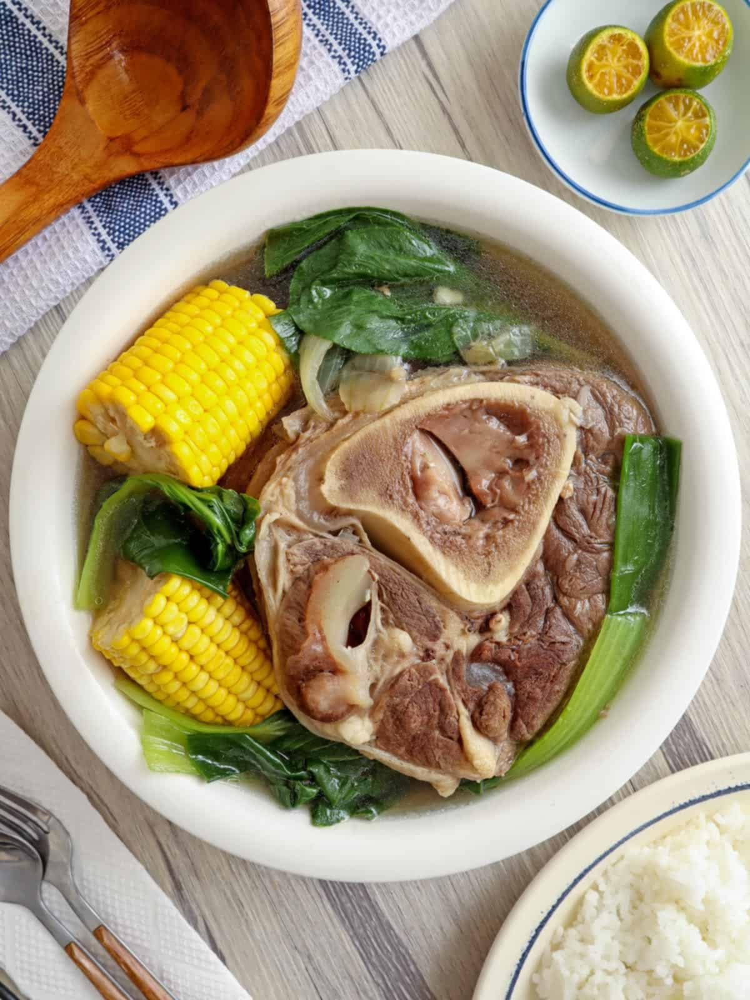

Bulalo: A Filipino Comfort Food
Bulalo is a beloved Filipino soup dish originating from the mountainous region of Batangas. It features a hearty broth made from simmering beef shanks, typically from a specific brees of cattle known for its rich marrow. The result is a deeply flavorful and nourishing soup that's both comforting and satisfying
The word "bulalo" comes from the Tagalog word "buto", meaning "bone." This refers to the key ingredient of the dish-the bone-in beef shanks, which contribute significantly to thw broth's richness and unique taste. Besides the broth, bulalo typically includes vegetables such as onions, garlic, and sometimes cabbage or bok choy. It's often enjoyed with a side of rice or noodles, making it a completeand fulfilling meal
Bulalo often associated with cold weather, and it's a popular dish during the rainy season in the Philippines. Its warmth and savory flavors offer a comforting escape from the chilly elements
View Bulalo Recipe
Bulalo Recipe
- 2-3 lbs beef shanks (bone-in, marrow-rich)
- 10 cups water
- 1 large onion,quartered
- 2 cloves garlic, crushed
- 1/2 cup chopped green onions
- 1/4 cup chopped cilantro
- Salt and pepper to taste
- 1/2 cup chopped cabbage (optional)
- 1/2 cup sliced bok choy (optional)
- 1/2 cup sliced green beans(optional)
- 1/4 cup patis (fish sauce, optional)
Instruction:
- In a large pot or Dutch oven, combine the beef shanks, water, onion, and garlic. Bring to a boil over high heat.
- Reduce heat to low, cover, and simmer fo 3-4 hours, or until the beef is very tender and the bone marrow is easily extracted.
- Remove the beef shanks from the pot and set aside.
- Skim off any excess fat from the broth.
- Add the green onions, cilantro, salt, and pepper to the broth.
- If using, Add the cabbage, bok choy, and green beans. Simmer for 5 minutes , or until the vegetables are tender-crisp.
- If using, stir in the patis (fish sauce) for extra flavor
- Return the beef shanks to the pot.
- Serve hot in bowls, with rice or noodles.